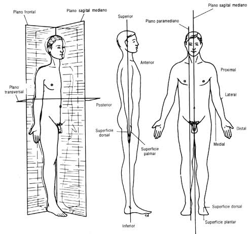

Compreendam o conceito de estado de movimeto.
Compreendam que massa é uma medida da inércia de um estado de movimento.
Consigam observar e avaliar uma finta.
conheçam os termos técnicos para descrever a anatomia do corpo humano e os planos de movimento.
Introdução
O primeiro momento da aula será usado para recordar os pontos chaves discutidos anteriormente. Pedi que procurassem as características de uma bola de tênis, justamente pela curiosidade de existirem bolas que são maciças e que são ocas. A elasticidade da bola de tênis é necessária para aumentar a interação desta com a raquete e facilitar que o esportista consiga aplicar um giro na bola. Para maximizar a interação, tanto a bola quanto a rede da raquete se deformam, consequentemente é uma demosntaarção visual da terceira lei de Newton: a bola deforma a raquete e a raquete deforma a bola simultâneamente.
Mesmo que seja necessário repetir brevemente o conteúdo do último encontro, o conceito de que forças sempre surgem em pares é fundamental para a discussão desta aula - nesta turma, minha maior preocupação são dois alunos que não são estudantes de física.
Para finalizar o início, proponho a pergunta central desta aula: como se ocorre um drible?
Discussão
Para avaliar a situação de drible, vou utilizar de alguns termos necessários para descrever a anatomia e movimentação humana. A seguinte figura será usada para falar de todos os pontos - imagino que os alunos que são formados em educação física possam ajudar bastante aqui e ancorar a próxima discussão neste tópico.

Os termos anatômicos direcionais:
Superior: em direção a cabeça (sinônimo em zoologia: cranial).
Inferior: em direção oposta a cabeça (sinônimo em zoologia: caudal).
Anterior: em direção a frente do corpo (sinônimo em zoologia: ventral).
Posterior: em direção as costas (sinônimo em zoologia: dorsal).
Medial: em direção ao centro do corpo.
Lateral: em direção oposta ao centro do corpo.
Proximal: em direção ao tronco.
Distal: em direção oposta ao tronco.
Superficial: em direção a superficie do corpo.
profundo: em direção oposta a superficie do corpo.
Em conjunto dessas direções, também se definem três planos que dividem o corpo humano:
Plano Transversal: separa as direções superior e inferior.
Plano Frontal: separa as direções anterior e posterior.
Plano Medial ou Sagitario: separa horizontalmente as direções medial e lateral.
Para avaliar o ato de andar ou correr, devemos nos concentrar no plano sagitario. Podemos associar um ponto na extremidade da perna, em contato com o solo. Mostro aos alunos um vídeo de um indivíduo correndo e pauso ao longo de vários instantes e marco o ponto desejado, esse procedimento produzirá uma trajetória. O próximo passo é estudar a trajetória em si.
Haverão dois momentos chaves: quando o ponto está ou não em contato com o chão. Se o corpo do esportista se move então há força, como o único ponto em contato com algum objeto sólido é o aquele que marcamos concluí-se que a força é aplicada ali. Por ação e reação a perna empurra o chão e o chão impulsiona o atleta para frente.
A conclusão da aula é levar esse conhecimento para a situação de finta. Mostro dois vídeos de fintas (um em basquete e outro em futebol) e peço que tentem reconhecer que a finta ocorre quando o jogador atacante mantém seu contato com o solo enquanto o jogador defensor perdeu o contato e é incapaz de reagir ao movimento do atacante.
é importante que todos possam responder a pergunta: qual força é maior, da bola sobre a raquete ou da raquete sobre a bola no início da aula. Penso em preparar um pequeno questionário sobre o tema e pedir que respondam na hora para avaliar se já compreendem e conseguem enxergar a lei de ação e reação.
Ao fim da aula vou indicar pelo Google Classroom um artigo que descrever a produção de medidores para estudar os movimentos durante uma atividade de caminhada ou corrida. Penso ser uma ótima leitura para integração dos temas da física e educação física.
Inércia é um fator extremamente importante no design de tudo que possuí uma massa consideravelmente grande, ou seja, em todo objeto observável na rotina do estudante. Dominar o conceito de inércia possibilita que o aluno enxergue o mundo com um olhar mais físico e abre portas para que discussões mais profundas de outros tópicos sejam possíveis.
Todo o projeto Bolas! é consturído para se relacionar com os esportes que são práticados pelos indivíduos, vistos na TV ou ainda não conhecido pelos estudantes. Penso em duas relações diretas com o cotidiano: conseguir enxergar a como a física influência e aplicar a física em suas próprias prática esportivas para racionalizar suas ações.